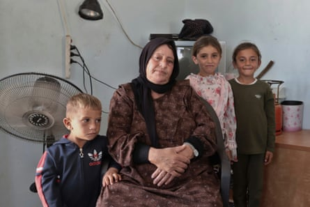

A li Awad is tired. The 27-year-old resident of Tuba, one of the dozen or so villages that make up Masafer Yatta in the arid south Hebron hills of the occupied West Bank , had been up all night watching as a masked Israeli settler on horseback circled his family home.
“When we saw the masked settler, we knew he wanted violence,” said Awad, his eyes bloodshot. They were lucky this time: the settler disappeared into the darkness before police could show up.
The men in Masafer Yatta rarely sleep these days. They take turns standing watch at night, fearful that nearby Israeli settlers will attack under the cover of darkness.
Daylight brings little respite. Residents work with an ear pricked up for the sound of approaching vehicles, scanning the horizon for Israeli bulldozers which could signal their homes are next to be demolished.
Israel designated Masafer Yatta a military training zone – named firing zone 918, where no civilians can live – in 1981. It has been working since to push out the roughly 1,200 residents who remain. These residents have been fighting in Israeli courts for more than two decades to stop their expulsion, a battle which has slowed, but not stopped, the demolition of Palestinian homes there.
Recently, an Israeli administrative body issued a decision which legal experts and activists have said could remove the last remaining legal barriers for the demolition of homes in Masafer Yatta. The decision could lead to the forcible transfer of 1,200 people, something the UN warned could be a war crime.
“This would amount to forcible transfer, which is a war crime. It could also amount to a crime against humanity if committed as part of a widespread or systematic attack directed against any civilian population, with knowledge of the attack,” the UN human rights office said on 26 June.
On 18 June, the civil administration’s central planning bureau, the Israeli military agency that issues construction permits in occupied Palestinian territories , issued a directive that all pending building requests in Masafer Yatta be rejected.
Previously, residents could file building planning requests and, while they were being examined, their structures could not legally be demolished. By cancelling all pending requests, the new directive dismisses all previously submitted cases without examining their particularities and gives demolitions the green light.
The decision was made at the same time as Israeli authorities are pursuing sharply increased numbers of demolitions across the West Bank and East Jerusalem, destroying 933 structures since the beginning of the year, a record-breaking pace, according to UN data . As structures are demolished, more Palestinians are killed in the West Bank, with at least 950 killed and 9,000 injured by Israeli forces and settlers since the start of the war in Gaza on 7 October 2023, according to Palestinian health authorities.
The new directive cites a military planning document issued a day earlier, which said that firing zone 918 was necessary for combat preparedness and that the presence of civilian structures prevented training exercises.
The document says: “The practical condition for such [military training] access is the removal of the unauthorised constructions, thus enabling the IDF to conduct its training … No construction in the firing zone can be permitted.” It adds that for live-fire exercises to be conducted, the area needs to be “sterile”.
According to a lawyer representing residents of Masafer Yatta, Netta Amar-Shiff, the new directive bypasses a previous legal ruling and abrogates local laws, and could rapidly expedite the destruction of villages.
Ali Awad, a resident of the Palestinian village of Tuba, in the firing zone 918, in Masafer Yattah.Photograph: Quique Kierszenbaum/The Guardian
“If this directive is activated, it means planning institutions can dismiss building requests under military auspices, so no civilian construction and development can be approved. It’s easier for them to eliminate entire villages,” Amar-Shiff said.
Humanitarian organisations have long accused Israel of establishing firing zones as an excuse to push Palestinians off their land and expand settlement construction. About 18% of Area C, the parts of the West Bank under full Israeli control, has been designated as firing zones.
According to government meeting minutes in 1981, the then agriculture minister and future PM, Ariel Sharon, proposed the creation of firing zone 918 with the purpose of forcing Palestinians out of the area.
In the meeting , Sharon told the IDF he wanted to expand shooting zones “in order to keep these areas … in our hands”, pointing to “the expansion of the Arab villagers” in the area.
In a comment, the Israeli military said the civil administration was “holding ongoing discussions regarding villages built within the boundaries of firing zone 918” and that the military had a “vital need for the area”.
“As a general rule, no approval will be granted for construction within the firing zone, which is designated as a closed military area,” the Israeli military said in a statement to the Guardian, adding that building permit requests were subject to approval by military command.
To Awad, last week’s decision is the latest attempt in a long line of court decisions and policies by the Israeli government to expel the residents of Masafer Yatta from their homes.
In May 2022, Israel’s high court ruled that the residents could be expelled and the land repurposed for military use, as it said villagers were not permanent residents of the area before the firing zone was declared. Residents and lawyers, relying on expert testimony and literature, said they had inhabited the area for decades.
“This decision was a clear way of cutting the last nerve of life that these people had,” said Awad, calling it part of a larger policy of “ethnic cleansing of Palestinians”.
Nasser Shreiteh stands in what was his kitchen of in the Palestinian village of Susyia. Israeli settlers set his home on fire in an attack.Photograph: Quique Kierszenbaum/The Guardian
Awad and the other residents of Masafer Yatta have spent more than two decades filing petitions, appeals, proposing master plans and submitting documents to try to fight the destruction of their community.
“We tried for many years to supply different documents and proofs and plans to the courts. But, after years of this, a commander in the army says no and that’s enough,” said Nidal Younis, head of the Masafer Yatta council, in a press briefing late last month.
As the residents navigate Israel’s labyrinthine bureaucracy to stave off demolition orders, settlers have acted as the extrajudicial vanguard of displacement, making daily life nearly intolerable for Palestinians.
Almost every single resident has a story about being harassed or attacked by nearby settlers, whose presence has been slowly growing, with new outposts popping up on the area’s hilltops.
In the early hours of 25 June, settlers set fire to Nasser Shreiteh’s home in the town of Susiya, burning his kitchen and a bedroom almost entirely, running off as he tried to extinguish the fire.
“They want to evict everyone, they want everyone to disappear. But I am here, if they burn my house down, I will stay here, I have no other place to go,” said Shreiteh, a 50-year-old with seven children, as he overlooked the charred remains of his kitchen.
As he spoke, an Israeli military patrol passed and behind it roared a beaten-up sedan driven by settlers, swerving in circles as the car’s trunk swung open. They pulled up to Shreiteh’s driveway and made an obscene hand gesture before driving off.
Incidents of settler violence in the area have sharply increased since the Hamas attack on 7 October 2023 and the subsequent war in Gaza. The rise of the far-right, extremist ministers Bezalel Smotrich and Itamar Ben-Gvir has provided political cover, allowing settlers to act with virtual impunity.
Many settlers have been called to military reserves, where they serve around their settlements. Residents of Masafer Yatta said settlers would often walk around in military dress, such as combat trousers, which made it impossible to tell whether they were dealing with settlers or soldiers.
Souad al-Mukhamari with three grandchildren in Sfai. She said one of her granddaughters was attacked by a settler.Photograph: Quique Kierszenbaum/The Guardian
Settler violence has escalated the tighter residents have clung to their land. In late January, settlers torched Awad’s car, which he had used to transport children to school and residents to legal hearings.
Souad al-Mukhamari, a 61-year-old resident of Sfai, another village in Masafer Yatta, complained that one of her granddaughters, a child, had been beaten and pepper-sprayed by a settler a month earlier. Her own home overlooked the debris of a school that was demolished in 2022.
Palestinians can do little to protect themselves from settler violence, and are severely punished if they attempt to do so. They complain that Israeli authorities fail to protect them and do not follow up on their complaints.
Legal advocates have said they expect little protection from Israel’s legal system, but instead are looking to the international community to increase pressure on Israel to halt settlement construction and protect the rights of Palestinians.
“We don’t see any possibility of internal change within Israel to protect these communities,” said Sarit Michaeli, an international advocacy officer at the Israeli human rights group B’tselem. “The only way to stop this is whether there is clear international action to clarify to Israeli policymakers that actions have consequences,” she added.
Members of the Ayub family look on during a demolition in Khirbet al Fakheit.Photograph: Quique Kierszenbaum/The Guardian
The Trump administration has expressed little interest in addressing illegal settlement construction and violence, lifting Biden-era sanctions on settlers. Instead, Michaeli said the EU could play a role in pressuring Israeli officials, especially as it announced at the end of May that it is reviewing its association agreement with Israel over human rights compliance concerns.
As residents of Masafer Yatta wait for international action, they live under the constant threat of displacement and settler violence, their means of resistance all stripped away one at a time. Still, they are determined to stay.
“Just mentally we are preparing for more demolitions. There’s nothing more on the ground we can do, besides putting our words in the media so they can reach farther than we can scream,” Awad said.